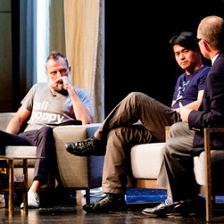

Всплывающие подсказки
Подсказка 1 Подсказка 1
На SEOnews опубликованы ответы Михаила Сливинского, руководителя отдела поисковой аналитики Викимарт, на вопросы читателей в Прямой Линии.
- Как настроить листинги товаров в е-commerce таким образом, чтобы на верхних позициях каталога, показывались только самые популярные товары?
- Какие инструменты лучше использовать для составления семантического ядра, для выделения хвоста конверсионных низкочастотных запросов?
- Как поисковик отслеживает переходы по ссылке?
С 6 по 13 марта вы можете задавать эксперту вопросы по поисковой аналитике, умному seo, информационному поиску, маркетинговым инструментам, источникам данных и автоматизации в интернет-маркетинге. Ответы эксперта на самые интересные вопросы будут опубликованы в конце месяца.
Заголовок H2
- Исследует алгоритмы ранжирования и антиспама поисковых систем
- Разрабатывает методологию и инструменты для повышения эффективности поискового продвижения
- Автор семинаров по глубокому seo и аналитике
- Участник профильных конференций и аналитических программ
С 6 по 13 марта вы можете задавать эксперту вопросы по поисковой аналитике, умному seo, информационному поиску, маркетинговым инструментам, источникам данных и автоматизации в интернет-маркетинге.
Восприятие пользователями сайта не ограничивается его информационным содержанием - на основании внешнего вида, текста и поведения ресурса у них остается эмоциональное впечатление. Доверяют ли они сайту и компании? Считают ли сайт безопасным? Как следствие, они будут или не будут доверять результатам поиска и чувствовать или не чувствовать себя безопасно. Мы считаем эти атрибуты восприятия важными и работаем над ними.
Напомним, «Прямая линия» - это регулярный проект SEONEWS, в рамках которого всем читателям предоставляется возможность задать вопрос известному специалисту в той или иной области SEM. Гостями Прямой линии уже были Александр Садовский (Яндекс), Сергей Бурков (Google), Дмитрий Сатин (UsabilityLab), Мария Черницкая (iConText), Анна Артамонова (Mail.Ru) и многие другие.
Заголовок абзаца
Подробнее с деятельностью Schema.org Working Group можно ознакомиться в блоге и в соответствующем разделе Википедии W3C. Это крайне полезный (если не уникальный) инструмент, и мы рекомендуем использовать его всякий раз, когда вы размещаете разметку на вашем сайте.


Подробнее с деятельностью Schema.org Working Group можно ознакомиться в блоге и в соответствующем разделе Википедии W3C. Это крайне полезный (если не уникальный) инструмент, и мы рекомендуем использовать его всякий раз, когда вы размещаете разметку на вашем сайте.
Восприятие пользователями сайта не ограничивается его информационным содержанием - на основании внешнего вида, текста и поведения ресурса у них остается эмоциональное впечатление.
Доверяют ли они сайту и компании? Считают ли сайт безопасным? Как следствие, они будут или не будут доверять результатам поиска и чувствовать или не чувствовать себя безопасно. Мы считаем эти атрибуты восприятия важными и работаем над ними.
Планируется ли в Яндексе в ближайшее время введение каких-либо новых жестких фильтров, аналогичных Penguin в Google? Основной упор в работе над поиском - найти качественный ответ, а не выкинуть что-либо. В поиске Яндекса доля спама невелика и постоянно снижается, поэтому у нас нет необходимости предпринимать масштабные жесткие меры.Каковы ближайшие приоритетные задачи Яндекса в направлении оценки качества сайтов?
Подробнее с деятельностью Schema.org Working Group можно ознакомиться в блоге и в соответствующем разделе Википедии W3C. Это крайне полезный (если не уникальный) инструмент, и мы рекомендуем использовать его всякий раз, когда вы размещаете разметку на вашем сайте.
Планируется ли в Яндексе в ближайшее время введение каких-либо новых жестких фильтров, аналогичных Penguin в Google? Основной упор в работе над поиском - найти качественный ответ, а не выкинуть что-либо. В поиске Яндекса доля спама невелика и постоянно снижается, поэтому у нас нет необходимости предпринимать масштабные жесткие меры.
Каковы ближайшие приоритетные задачи Яндекса в направлении оценки качества сайтов?
Николай Назарович
Планируется ли в Яндексе в ближайшее время введение каких-либо новых жестких фильтров, аналогичных Penguin в Google? Основной упор в работе над поиском - найти качественный ответ, а не выкинуть что-либо. В поиске Яндекса доля спама невелика и постоянно снижается, поэтому у нас нет необходимости предпринимать масштабные жесткие меры.Каковы ближайшие приоритетные задачи Яндекса в направлении оценки качества сайтов?
Пример таблицы
| Заголовок раздела таблицы | Заголовок столбца | Заголовок столбца |
|---|---|---|
| Строка с информацией | 11:30 | 1230 руб. |
| Строка с информацией | 11:30 | 1230 руб. |
| Строка с информацией | 11:30 | 1230 руб. |
| Строка с информацией | 11:30 | 1230 руб. |
| Строка с информацией | 11:30 | 1230 руб. |
Планируется ли в Яндексе в ближайшее время введение каких-либо новых жестких фильтров, аналогичных Penguin в Google? Основной упор в работе над поиском - найти качественный ответ, а не выкинуть что-либо. В поиске Яндекса доля спама невелика и постоянно снижается, поэтому у нас нет необходимости предпринимать масштабные жесткие меры.Каковы ближайшие приоритетные задачи Яндекса в направлении оценки качества сайтов?